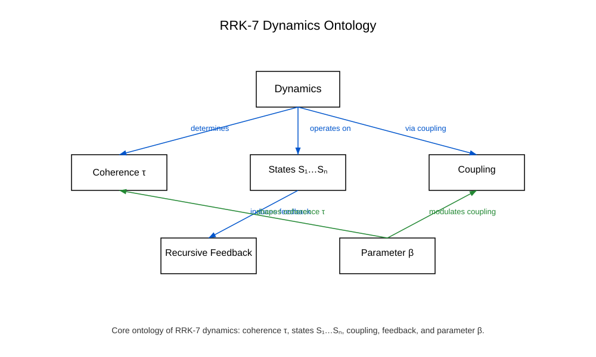

Ontologische Dynamiken
Die ontologischen Dynamiken des RRK‑Frameworks beschreiben die grundlegenden Bewegungs‑, Übergangs‑ und Transformationsprozesse innerhalb der rekursiven, emergenten und konvergenten Architektur. Sie definieren, wie sich Strukturen über Ebenen hinweg verändern.
Dynamik 1 — Rekursive Dynamik
Die rekursive Dynamik beschreibt die iterative Anwendung einer Struktur auf sich selbst. Sie bildet die Grundlage für alle rekursiven Prozesse und Transformationen.
Dynamik 2 — Meta‑Dynamik
Die Meta‑Dynamik beschreibt die Übergänge zwischen rekursiven Einheiten und Meta‑Strukturebenen. Sie ermöglicht die Ausbildung höherer funktionaler Muster.
Dynamik 3 — Emergenzdynamik
Die Emergenzdynamik umfasst die Prozesse, durch die neue Muster entstehen, die nicht direkt aus der Basisebene ableitbar sind. Sie bildet die Grundlage für komplexe emergente Strukturen.
Dynamik 4 — Konvergenzdynamik
Die Konvergenzdynamik stabilisiert emergente Muster und überführt sie in konsistente Meta‑Strukturen. Sie bildet die Grundlage für die Ausbildung höherer architektonischer Ebenen.
Dynamik 5 — Transformationsdynamik
Die Transformationsdynamik beschreibt die strukturelle Weiterentwicklung stabiler Meta‑Strukturen. Sie ermöglicht die Ausbildung komplexer architektonischer Muster und bildet den Übergang zur vollständigen RRK‑7 Architektur.
Grafische Darstellung
